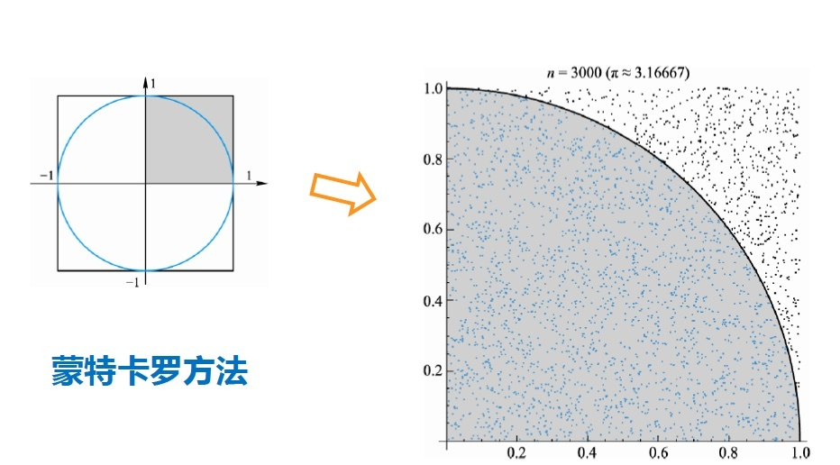

if 一般用于判断选择
score = 95
if score > 90:
print('优秀')age = 20
if age >= 18:
print('成年')
else:
print('未成年')age = 19
print('成年') if age >=18 else print('未成年') # 只有双分支有这种写法# 90以上优秀，70-90良好，70以下不及格
# 法1：
score = 79
if score > 90:
print('优秀')
elif score > 70:
print('良好')
else:
print('不及格')
# 法2：
score = 79
if score > 90:
print('优秀')
if score > 70 and score < 90:
print('良好')
else:
print('不及格')if...elif...elif...else 执行完if才到elif 执行if就已经筛选了
if...if...if...if 同时判断 （效率低）
try:
print('----1----')
f = oen('a.txt', 'r') # 路径不对， 是错误的代码
print('----2----')
except: # 捕获异常
pass
# 输出结果：
----1----
try:
1 / 0
y = input('请输入数字：')
y += 10
except TypeError as e:
print('error:', e)
except ZeroDivisionError as a:
print('error:', a)
print(x + 10)
# 打印结果：
error: division by zero
11try:
1 / 0
y = input('请输入数字：')
y += 10
except Exception as e: # 只要捕捉Exception
print('error:', e)不需要记住具体异常，只要捕捉Exception
try:
1 / 0
y = input('请输入数字：')
y += 10
except Exception as e: # 只要捕捉Exception
print('error:', e)
finally: # 无论是否报错，都会执行finally下的代码
print(1)s = input('请输入数字：')
# print(s.isalpha()) # isalpha() 如果全是字母，则输出True
if s.isalpha():
raise TypeError('报错了, 请输入数字')
# 打印结果：
Traceback (most recent call last):
File "D:/test2.py", line 82, in <module>
raise TypeError('报错了, 请输入数字')
TypeError: 报错了, 请输入数字
count = 0
while count < 10:
if count %2 == 0:
print(count, end=',')
count += 1
# 打印结果：
0，2，4，6，8,for i in range(21):
print(i, end=', ')
# 打印结果：
0, 1, 2, 3, 4, 5, 6, 7, 8, 9, 10, 11, 12, 13, 14, 15, 16, 17, 18, 19, 20, for i in range(21):
if i == 10:
continue # continue终止本次循环，跳到下次循环
print(i, end=', ')
# 打印结果：
0, 1, 2, 3, 4, 5, 6, 7, 8, 9, 11, 12, 13, 14, 15, 16, 17, 18, 19, 20,for i in range(21):
if i == 10:
break
print(i, end=', ')
# 打印结果：
0, 1, 2, 3, 4, 5, 6, 7, 8, 9, import random
print(random.randint(1,10)) # 随机生成1-10中某个数
print(random.random()) # 在0-1之间默认生成数import random
random.seed(4) # 给一个随机数种子
print(random.random()) # 只第一次随机生成，之后生成的数字就一样了
print(random.random())
# 如果不自定义种子，则种子按照当前的时间来import random
print(random.choice([1,2,3,4,5]))import random
lt = [1,2,3,4,5,6]
random.shuffle(lt) # 打乱列表顺序
print(lt)圆周率计算公式：
\[
\pi = \sum_{k=0}^\infty [\frac{1}{16^k} (\frac{4}{8k+1}-\frac{2}{8k+4}-\frac{1}{8k+5}-\frac{1}{8k+6})]
\]
pi = 0
k = 0
while True:
pi += (1 / (16 ** k)) * (4 / (8 * k + 1) - 2 / (8 * k + 4) - 1 / (8 * k + 5) - 1 / (8 * k + 6))
print(pi)
k += 1
import random
count = 0
for i in range(1000000):
x, y = random.random(), random.random()
distance = pow(x**2 + y**2, 0.5)
if distance < 1:
count += 1
print(count/1000000*4)